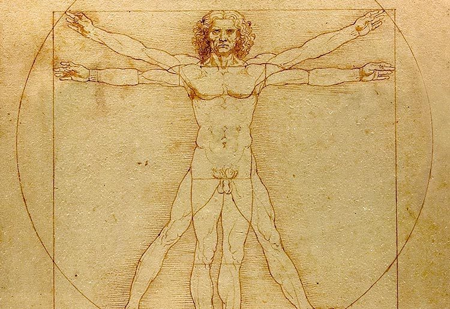

VITRUVIAN PROPORTION
He looked at the world and saw a badly-composed painting — so he came back to recompose it, one battlefield at a time, and he will never, ever finish.

VITRUVIAN PROPORTION
He looked at the world and saw a badly-composed painting — so he came back to recompose it, one battlefield at a time, and he will never, ever finish.
Feature map
Level-by-level features, as the figure refined them.
The Golden Section
Bonus action · 1 CE.
Tier III · Controller · suggested CE ability INT · Primary verb: Compose. The world is miscomposed. Vitruvian Proportion treats position as negotiable: the ideal arrangement is known — he always knows it — so the real arrangement can be corrected, the way a painter corrects a sketch.
Slide one creature you can see within 60 ft up to 10 ft in a direction you choose. A willing creature may decline; an unwilling creature may resist — it stays put, but the attempt still costs you the bonus action. (Half an inch left. The composition demands it.)
Anatomical Eye
Passive.
You always know exact distances without measuring, and difficult terrain costs you no extra movement — you have composed your own path. Additionally, as a bonus action you may study one creature you can see and learn its current movement speeds. (He drew the muscles. He knows how they move.)
Recompose
Action · 3 CE.
Choose up to PB creatures you can see within 60 ft. Each willing creature is slid up to 15 ft; each unwilling creature must make a STR save against your technique DC or be slid up to 15 ft. (The figures, rearranged.)
Terrain Study
Action · 2 CE · 1 minute.
Choose a 20-ft cube within 60 ft. It becomes difficult terrain, or ceases to be difficult terrain, for the duration — your choice. (The ground is part of the composition.)
The Ideal Form
Action · 5 CE.
Reposition up to PB creatures you can see within 60 ft, sliding each up to 20 ft (willing creatures may decline; unwilling creatures make a STR save to resist). Until the start of your next turn, your allies among them gain +2 AC — the composition protects its figures. (Every man where the circle requires him to stand.)
Vanishing Point
Bonus action · 4 CE · until the start of your next turn.
Choose a point within 60 ft. Ranged attacks against your allies within 15 ft of that point have disadvantage — forced perspective; the point is farther than it is. (Distance is negotiable.)
The Living Diagram
Passive.
Your Golden Section slide becomes 15 ft. Additionally, when you slide a creature, it provokes opportunity attacks from your allies as it moves — you compose enemies into blades. (The diagram is not a picture. It is a weapon.)
The Grand Composition
Action · 8 CE.
The masterpiece: every creature you can see within 90 ft is slid up to 30 ft to positions you choose (willing creatures may decline; unwilling creatures make a STR save to resist), and you reshape all difficult terrain in the area as you like for 1 minute. (The canvas, corrected all at once.)
Maximum, Domain, or equivalent.
Capstone material.
Vitruvian Man: The Perfected Field
You project the Vitruvian circle. At the start of each of your turns, you may slide every creature in the area up to 10 ft (willing creatures may decline; unwilling creatures that failed a STR save when the field was created are slid — those that succeeded are immune to the field's slides for the duration). While the field stands, your Golden Section costs no CE. (The man in the circle. The circle in the square. Everything where it should be.)
The Smile
Your next Grand Composition is perfect: it requires no concentration, unwilling creatures get no save, and its repositioning cannot be undone by forced movement for 1 minute — Heaven ratifies the geometry. (She smiles because the composition is complete. It will never be finished. It doesn't need to be.)
Build-defining options.
This technique grants Innate Technique Feats — hand-authored applications of the figure's art, available in the builder's feat picker when you select this technique.